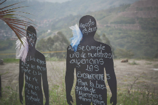

Comuna 13
La vida y la memoria son presente
Estigmatizada y violentada por un sinfín de operaciones militares, la Comuna 13 renace desde resistencia al olvido de mujeres que caminan por la verdad. La organización Mujeres Caminando por la Verdad es un colectivo que agrupa madres, hijas, esposas, hermanas o amigas que buscan a sus seres queridos desaparecidos en las operaciones militares que se llevaron a cabo en la Comuna 13 durante el período 2001-2002. Se estiman que más de 300 personas fueron detenidas/desaparecidas en operaciones conjuntas de grupos paramilitares, policía y ejército, para luego ser inhumados en las escombreras cercanas al sector. Desde hace más de 13 años estas mujeres buscan incansablemente a los suyos, se movilizan en la ciudad y realizan acciones directas para llevar la atención de los habitantes a la problemática de la Desaparición Forzada, muy poco hablada en el contexto actual.
Ir a galeria